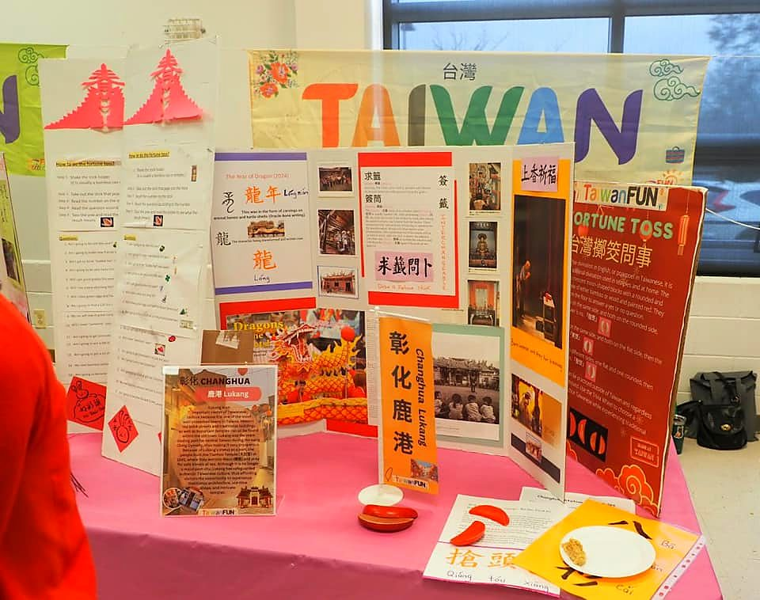
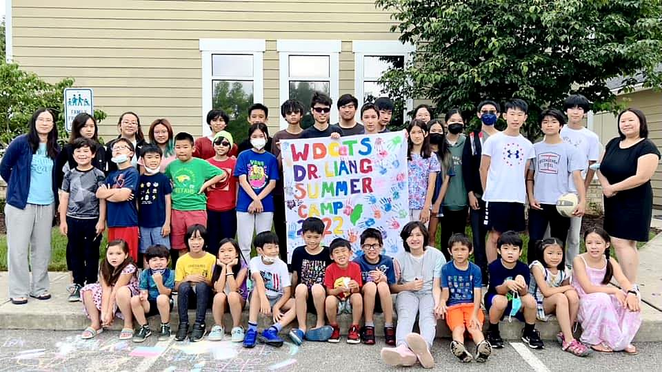

STUDENT LIFE 校園生活
Culture you live,
Culture you live,
not just learn.
Festivals, performances, clubs and two championship dragon boat teams — the parts of Sunday students remember most.
Something for every kid
Arts & Culture
Art 美術Crafts 工藝
Calligraphy 書法
Dr. Liang Summer Camp 梁博士夏令營
Movement
Dragon Boat 龍舟Dance 舞蹈
Diabolo 扯鈴
Basketball 籃球 · Pickleball 匹克球 · Karate 空手道
Strategy & Skills
Chess Club 棋社Guzheng 古箏
Percussion 打擊樂
FESTIVALS & TRADITIONS 節慶
A school year built around Taiwanese celebrations.
新年Lunar New Year
端午節Dragon Boat Festival
中秋節Mid-Autumn Festival
冬至Winter Solstice
We also remember our history — 2-28 Memorial Day and Taiwan Human Rights Day — and share our heritage with neighbors at the Rockville Bubble Tea Festival.

DRAGON BOAT 龍舟隊 · SINCE 2007
Join a crew →
Humpbacks & Belugas
Two whale-themed crews race every year at the DC Dragon Boat Festival on the Potomac: the adult Humpbacks bring strength and experience, the youth Belugas bring the energy.
4×Education Cup winners, Humpbacks (2019, 2022–24)
0:47.90Belugas' fastest 200m, Youth Cup 2025
2008First gold medals — 250m and 500m, C Major
Race results 歷年成績
| Crew | Race | Place | Time |
|---|---|---|---|
| Humpbacks | Education Cup 200m | 2nd | 0:56.09 |
| Humpbacks | Festival Open 200m, A Minor | 2nd | 1:00.45 |
| Humpbacks | Festival Open 500m, A Minor | 4th | 2:23.75 |
| Belugas | Youth Cup 200m | Silver | 0:56.11 |
| Belugas | Festival Mixed 200m, A Minor | 2nd | 0:56.79 |
| Belugas | Festival Mixed 500m, A Minor | 4th | 2:13.64 |
Earlier years: one WDCTS crew from 2007; gold medals in 2008, 2016, 2017 and 2018. No races 2009–2015 or 2020–2021.
Moments from recent years



